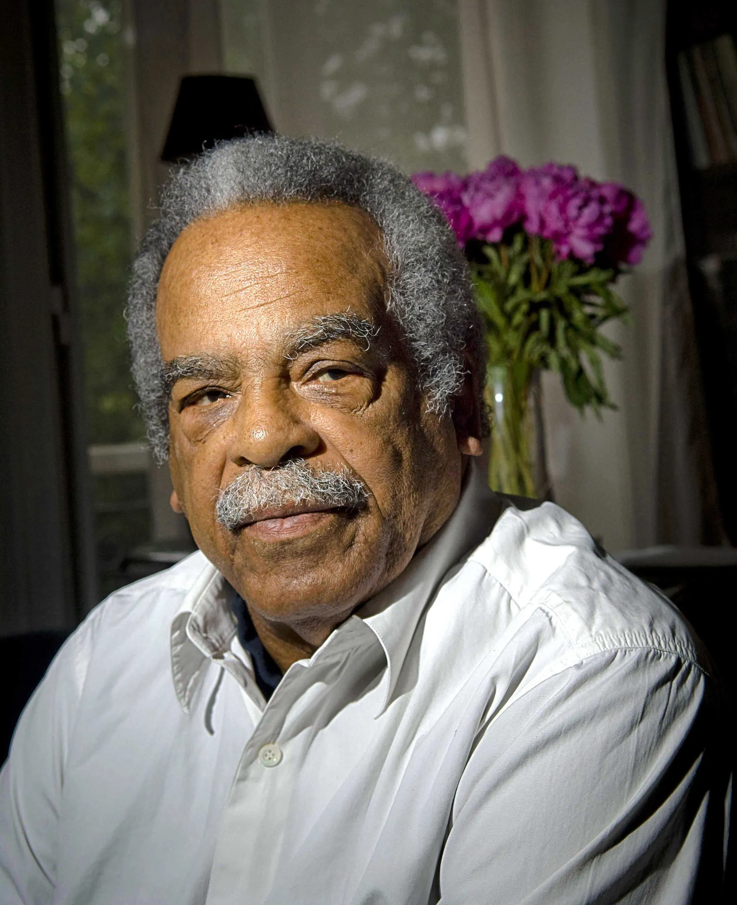
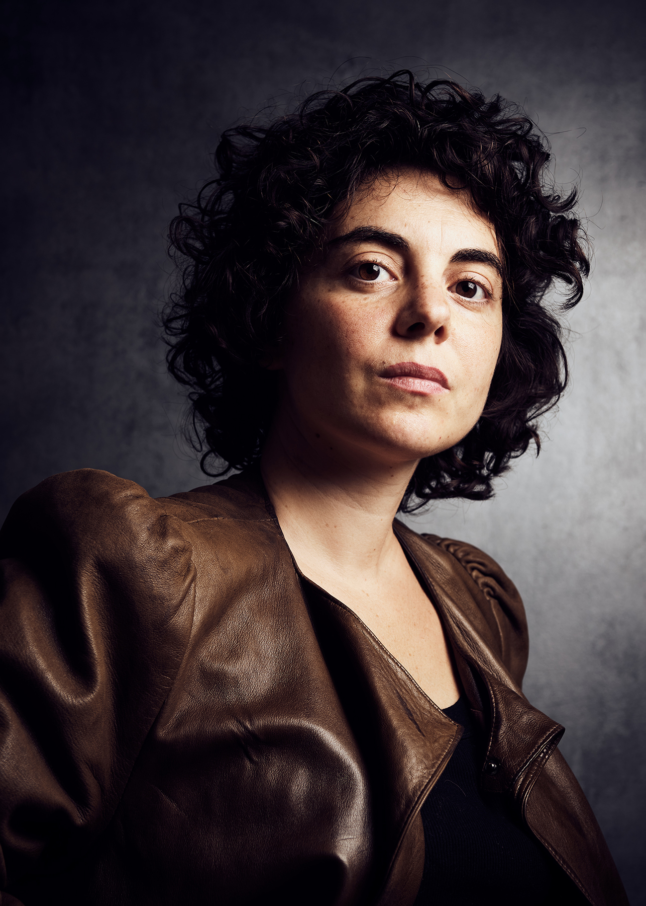

J’ai une histoire avec le jazz qui est d’abord une histoire d’absence.
Mon grand frère était saxophoniste. Il avait quinze ans de plus que moi. Quand j’avais treize ans, il est parti s’installer au Canada – pas une rupture violente, plutôt une disparition polie du lien, un divorce sourd. Le jazz qu’il jouait et aimait est resté là, de ce côté de l’Atlantique, dans l’espace qu’il avait quitté. J’ai commencé à écouter cette musique comme on écoute quelqu’un qui n’est plus là. Pour faire exister son absence autrement que comme un vide.
Ce rapport-là au jazz – une musique aimée parce qu’il y a un manque derrière, une musique habitée plutôt que possédée – est peut-être la première chose que je partage avec Mezzrow. Pas la musique elle-même. La structure.
J’ai découvert La Rage de vivre au CNSAD, en troisième année, sur les conseils de Xavier Gallais, Margaux Eskenazi et Florient Azoulay. On m’avait fait jouer la scène de la parade – sans encore tous les questionnements que ce travail a fini par soulever. Quelques semaines plus tôt, Camille – une collègue de promotion – était décédée d’un arrêt cardiaque devant moi, dans la rue. J’ai tenté de la réanimer avec un défibrillateur qui ne fonctionnait pas. Ça n’a pas marché.
Dix ans plus tard, j’ai écrit un texte sur cet instant. Je l’ai construit en reprenant la forme incidentelle des solos de John Coltrane – ces cris que j’entendais au fond de moi et que je me forçais à ravaler pour rester lucide et tenter de la sauver. Et même dans ce geste-là – prendre la forme de Coltrane pour dire ce que je ne pouvais pas crier – je me servais d’un langage culturel qui n’était pas le mien.
Et c’est ça qui revient maintenant comme une question que je ne peux pas esquiver : même ce qu’il y a de plus intime dans mon rapport au jazz est déjà une succession d’emprunts, d’absences habitées par des formes prises ailleurs.
De quel droit ?
Je ne peux pas complètement répondre à cette question : je suis blanc, je ne suis pas juif, je ne suis pas américain. Je n’ai aucune légitimité évidente à porter cette histoire. Mezz Mezzrow non plus n’en avait aucune – pas de légitimité raciale, peu de légitimité musicale, ni de légitimité narrative. Il n’était pas le plus grand, pas le plus juste, pas le plus fondé à être là. Et pourtant il était là – entier, brûlant, sans défense, convaincu d’en avoir une. Et c’est peut-être aussi la condition de l’acteur.
Ce livre s’est imposé à moi à un moment où je rencontrais la mort pour la première fois. Je n’y reviens pas pour l’adapter. J’y reviens pour lui répondre – un dialogue, dix ans après, fait d’accord, de désaccord, de réconciliation et de contradictions tenues ensemble, sans que rien ne se referme.
Milton Mezzrow, Chicago, 1899. Juif, blanc, fils d’une famille de petite bourgeoisie aussi respectable qu’un dimanche matin. Gamin délinquant, il passe par les maisons de correction — et là, il entend le jazz pour la première fois. C’est une révélation totale. Il décide que c’est là que se trouve sa vraie vie.
Il deviendra clarinettiste, saxophoniste. Techniquement insuffisant — Boris Vian, dans une chronique de 1948 parue dans Jazz Hot, note qu’il « tend à laisser sa clarinette jouer toute seule de temps en temps » et use de « clichés vite lassants » (Chroniques de jazz, La Jeune Parque, 1967, p. 119). Il côtoie Armstrong, Bechet, Ladnier, les plus grands. Il organise et finance leurs sessions, leur sert de passeur, de dealer, de producteur, d’ami fidèle. Il est moins bon qu’eux. Il le sait. Il l’entend chaque soir.
En 1940, arrêté à l’entrée d’un club, il demande à être transféré dans le quartier noir de la prison. Il se déclare Negro sur ses papiers de prison. Geste absurde, impossible, et pourtant le plus honnête qu’il ait fait — pas un discours, un acte concret, dans toute son impossibilité. Il épousera une femme noire. Vivra à Harlem. Finira sa vie à Paris, où il est enterré au Père-Lachaise.
Really the Blues paraît en 1946, co-écrit avec Bernard Wolfe — intellectuel juif, diplômé en psychologie de Yale, ancien secrétaire de Trotsky au Mexique. La traduction française, La Rage de vivre, paraît en 1950 aux éditions Corrêa, précédée d’une préface de Henry Miller. Le livre porte en lui-même une déconstruction : Wolfe rédige en annexe un essai, « Ecstatic in Blackface », dans lequel il soutient que l’entertainer.euse noir.e « authentique », fétichisé.e pour la pureté et la spontanéité de son expression, est en partie une projection du fan blanc. Ce que Mezz croit aimer dans la négritude est, selon Wolfe, pour partie une image fabriquée par le regard blanc lui-même — et Mezz en est un producteur autant qu’un consommateur. Un livre qui se méfie de lui-même, donc.

Édouard Glissant — Martinique, 1928 · Paris, 2011
L'opacité, pour Édouard Glissant, n'est pas le mystère ni l'obscurantisme : c'est le droit de n'être pas transparent pour l'Autre — de ne pas avoir à se justifier, à se traduire, à se réduire pour être compris. Dans la Poétique de la Relation (1990), il soutient que reconnaître l'autre n'implique pas de le pénétrer : on peut consentir à ce qu'on ne comprend pas. Cette pensée renverse le rapport classique entre connaissance et relation : ce n'est pas parce qu'on comprend qu'on respecte — c'est parce qu'on accepte de ne pas tout comprendre qu'on peut vraiment rencontrer. Ce que Mezzrow ne comprend jamais tout à fait — la musique noire, les corps noirs, la colère noire — est peut-être la condition même de sa dévotion.
Jimmie Noone & All Star Jazz Band — 1944Johnny DoddsSidney Bechet — The Unique
Raphaël Naasz
Raphaël Naasz se forme d'abord à la musique, au basson et au violoncelle, au conservatoire de Nice. Cette formation musicale reste au cœur de son travail d'acteur et de metteur en scène, et la relation entre théâtre et musique traverse l'ensemble de son parcours. En 2013, il entre au Conservatoire National Supérieur d'Art Dramatique (CNSAD), où il travaille auprès de Sandy Ouvrier, Nada Strancar, Mario Gonzales, Stuart Seide et Xavier Gallais.
En 2016, il co-met en scène avec Antoine Sarrasin « Blue Train », spectacle de théâtre musical d'après la Prose du Transsibérien de Blaise Cendrars, créé au Théâtre de l'Étoile du Nord à l'invitation de Sarah Tick. La même année, il fait un passage par le cinéma d'auteur avec « L'amant d'un jour » de Philippe Garrel.
Au théâtre, il joue dans « Lourdes » de Paul Toucang (Théâtre National de la Colline, 2017) et « Les Bacchantes » d'Euripide, mises en scène par Marcus Borja, dont le travail repose sur le chœur et la voix (2017). En 2019, il rejoint Margaux Eskenazi pour « Et le Cœur Fume Encore ». Il est Hippolyte dans « Phèdre » (2020) puis Treplev dans « La Mouette » (2022), deux mises en scène de Brigitte Jacques-Wajeman au Théâtre de la Ville. Il retrouve Margaux Eskenazi pour « 1983 » (2023), puis pour « Kaddish, la femme chauve en peignoir rouge », créé au Théâtre Gérard Philipe de Saint-Denis en avril 2026.
Il réalise en 2022 un premier court métrage, « Hémisphère », et se forme au montage vidéo. Il développe aujourd'hui « La Rage de Vivre », un solo de théâtre musical autour du jazz, qui prolonge le travail amorcé avec « Blue Train ».

Margaux Eskenazi
Diplômée d'un Master II recherche en Études Théâtrales à Paris III et de la section mise en scène du CNSAD en 2014, Margaux Eskenazi crée la Compagnie Nova en 2007. Avec la Compagnie, son travail est fortement implanté en Seine-Saint-Denis où elle met en place depuis 2007 de nombreuses actions sur le territoire en lien avec ses créations. Elle intervient également dans les Écoles Supérieures d'Art Dramatique pour mener des ateliers auprès des élèves : l'École de la Comédie de Saint-Etienne, l'Esad à Paris, l'École du Nord à Lille. Après un travail sur les textes de répertoire, elle fonde une nouvelle recherche depuis 2016 qu'elle ne cesse d'expérimenter d'un théâtre alliant l'intime, le politique et le poétique. Chaque spectacle est une exploration de plusieurs matériaux pour faire naître une théâtralité polysémique et rizomathique. Toute sa recherche est centrée sur le travail mémoriel et les récits manquants qui nous aident à penser nos identités.
Entre 2016 et 2023, elle a développé un triptyque "Écrire en pays dominé" consacré aux amnésies coloniales et aux poétiques de la décolonisation : Nous sommes de ceux qui disent non à l'ombre, Et le cœur fume encore, 1983. Au printemps 2021, Margaux Eskenazi crée Gilles ou qu'est-ce qu'un samouraï, à partir de la conférence de Gilles Deleuze, Qu'est-ce que l'acte de création ?
En janvier 2024, elle crée Si Vénus avait su, spectacle en lieux non-dédiés, sur une commande du théâtre de la Poudrerie (Sevran) consacré aux socio-esthéticiennes. Elle crée également le spectacle de sortie de la Belle Troupe en juin 2024 au Théâtre de Nanterre-Amandiers, Kaddish-mémoires autour de la littérature d'Imre Kertész. A l'été 2025, Margaux Eskenazi a créé un spectacle consacré aux jeunes filles du Bon Pasteur pour la 17e édition du festival du Nouveau Théâtre Populaire.
Pour la saison 2025-2026, Margaux Eskenazi a créé Kaddish, la femme chauve en peignoir rouge autour des identités juives en France aujourd'hui. Elle prépare un spectacle jeune public prévu à l'automne 2026 et adapte avec Julie Deliquet et Julie André L'instruction de Peter Weiss, prévu pour l'automne 2027 au Théâtre National de la Colline.